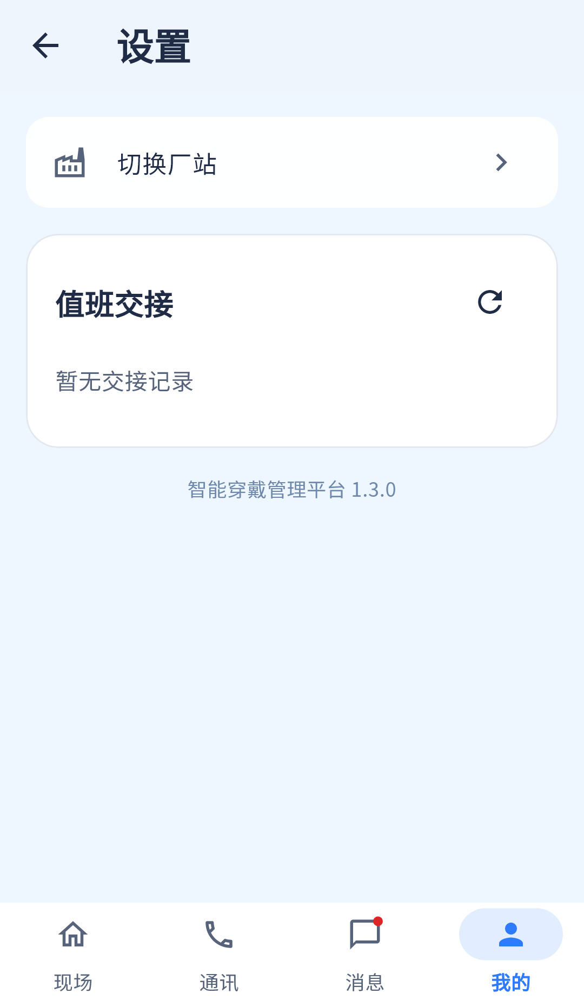

设置主要功能已实现，展示层与信息密度待对齐；不恢复亮暗切换。
相同 · 已有基础
切换厂站、值班交接、版本号、四栏及返回都有。
不同 · UI与场景
当前切站卡无当前厂站副标题；交接直接内嵌列表，参考有待确认数量和查看记录入口；缺通话保护提示卡。
01 / 先看 UI
两图显示宽度统一；设计390px与当前360逻辑宽的画布不同。各图可独立滚动到底，点击“原图”放大。


使用既有组件截图；业务数据为示例。
02 / 逐项核对功能与小交互
入口：我的 → 设置 · 当前形态：子页面
| 编号 | 部位 | 设计要求 | 当前UI | 功能结论 | 下一步 |
|---|---|---|---|---|---|
| 34-01 | 头部 | 设置插画+Logo | 当前普通标题 | UI缺口 | 按统一子页头部补齐 |
| 34-02 | 切站 | 当前厂站名及箭头 | 当前仅“切换厂站” | 部分：跳转功能已有，副标题缺 | 显示session.siteName |
| 34-03 | 通话约束 | 先结束通话再切站 | 当前callActive时禁用 | 已有代码：UI和session双保护 | 补可读禁用原因 |
| 34-04 | 交接摘要 | 待确认数量、交接双方、时间 | 当前完整记录在设置内，有双方/时间/状态 | 部分：缺待确认汇总与简版卡 | 补摘要，数据见35 |
| 34-05 | 查看记录 | 查看交接记录按钮 | 当前无需跳转直接展示 | 已有相同目的，不同交互 | 可用展开或子内容页，保持一份数据 |
| 34-06 | 刷新 | 手动刷新交接 | 当前刷新图标与加载条 | 已有代码 | 保留空态失败重试 |
| 34-07 | 版本 | 智能穿戴管理平台1.3.0 | 当前硬编码同样文案 | 展示一致，版本与包信息未动态读取 | 后续改应用版本真实读取 |
| 34-08 | 主题 | 没有亮暗切换 | 当前没有 | 符合当前明确要求 | 继续保持浅色，不新增开关 |
源码依据
mine_page.dart:669,800；session.dart:189
链接为随报告保存的带行号快照；行号对应分析时源码。以函数和字段共同定位，不能将请求代码视为执行成功证据。